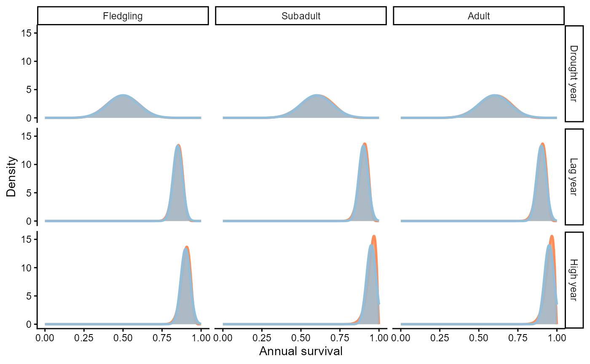
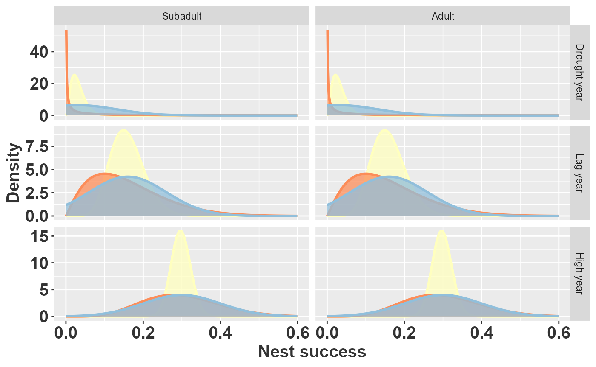
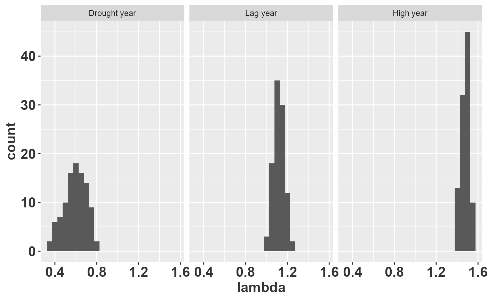

Although the companion paper and the other raretrans
vignettes focus on perennial plant data sets, the same Bayesian
principles apply to animal populations. Small sample sizes compromise
the estimation of survival and reproduction whenever the analyst
believes that matrix entries should vary by age, sex, or environmental
condition. In some cases there are no data at all for a particular
combination of stage and environment, and the analysis must proceed
using expert opinion—what Bayesians call prior beliefs.
Expressing those beliefs as probability distributions (rather than single point estimates) has two practical advantages. First, it forces the analyst to be explicit about how confident they are in each parameter. Second, it provides a principled way to propagate that uncertainty through derived quantities such as the asymptotic population growth rate , the stable stage distribution, or extinction risk.
This vignette walks through a published Population Viability Analysis
(PVA) for the endangered Florida Snail Kite and shows, step by step, how
to re-express the original normal-distribution assumptions as Beta
priors. The example does not use the raretrans functions
directly because the published information is given as means and
standard deviations rather than as raw transition counts. Nevertheless,
the underlying logic—combining prior beliefs with data through conjugate
Bayesian models—is exactly the same. A final section at the end shows
how to connect this workflow back to raretrans when count
data are available.
library(dplyr)
library(tidyr)
library(purrr)
library(tibble)
library(ggplot2)
library(popbio)
library(huxtable)
# Raymond's theme modifications
rlt_theme <- theme(axis.title.y = element_text(colour="grey20",size=15,face="bold"),
axis.text.x = element_text(colour="grey20",size=15, face="bold"),
axis.text.y = element_text(colour="grey20",size=15,face="bold"),
axis.title.x = element_text(colour="grey20",size=15,face="bold"))Snail kites
Background
The Florida Snail Kite (Rostrhamus sociabilis plumbeus) is a wetland raptor that feeds almost exclusively on apple snails (Pomacea paludosa). Because snails are sensitive to water depth, periodic drought events in the Everglades create a direct link between hydrological management and kite demography. Stephen Beissinger (1995) developed a stage-based PVA to evaluate how the frequency of drought cycles affects the kite’s long-term viability. This study is a classic example of how expert opinion fills the gaps left by sparse field data.
Study design and data sources
Radio-telemetry and nest monitoring provided reasonably reliable survival and nest-success estimates for “high water” years, but data for “drought” and “lag” (recovery) years were far scarcer. Beissinger used a combination of field observations and expert judgement to assign parameter values for those environments. The model distinguished three age classes—fledgling, subadult, and adult—because small sample sizes precluded a finer age structure.
The table below (reproduced from Table 2 of Beissinger (1995)) summarises the vital rates used in the PVA. For each combination of environmental state and age class, means, standard deviations, and ranges are given for both nest success and annual survival. Beissinger sampled these parameters from normal distributions during the stochastic simulations.
b1995_table2 <- tribble(
~env_state, ~age_class, ~mean_ns, ~sd_ns, ~range_ns, ~prop_nesting, ~attempts, ~mean_s, ~sd_s, ~range_s,
"", "", "Nesting success", "","", "", "", "Annual survival", "","",
"Environmental state", "Age Class", "Mean", "SD","Range", "Proportion Nesting",
"Nesting attempts per year", "Mean", "SD", "Range",
"Drought year", "Fledgling", "0.00", "0.00", "0.00-0.00", "0.00", "0.00", "0.50","0.10", "0.30-0.80",
"", "Subadult", "0.03", "0.10", "0.00-0.25", "0.15", "1.00", "0.60", "0.10", "0.40-0.90",
"", "Adult", "0.03", "0.10", "0.00-0.25", "0.15", "1.00", "0.60", "0.10", "0.40-0.90",
"Lag year", "Fledgling", "0.00", "0.00", "0.00-0.00", "0.00", "0.00", "0.85","0.03", "0.75-0.92",
"", "Subadult", "0.16", "0.10", "0.04-0.33", "0.15", "1.00", "0.90", "0.03", "0.80-0.95",
"", "Adult", "0.16", "0.10", "0.04-0.33", "0.80", "1.50", "0.90", "0.03", "0.80-0.95",
"High year", "Fledgling", "0.00", "0.00", "0.00-0.00", "0.00", "0.00", "0.90","0.03", "0.75-0.92",
"", "Subadult", "0.30", "0.10", "0.1-0.40", "0.25", "1.00", "0.95", "0.03", "0.85-0.98",
"", "Adult", "0.30", "0.10", "0.1-0.40", "1.00", "2.20", "0.95", "0.03", "0.85-0.98")
huxtable(b1995_table2) %>%
set_colspan(row = 1, col = c(3,8), value = 3) %>%
theme_article(header_col = FALSE) %>%
set_width(0.9) %>%
set_col_width(c(0.15, 0.1, 0.075, 0.075, 0.1, 0.15, 0.15, 0.075, 0.075, 0.1)) %>%
set_position("left") %>%
set_bottom_border(row = 1, col = everywhere, value = 0) %>%
set_bottom_border(row = 2, col = everywhere, value = 1) %>%
set_caption("Snail kite vital rates from Beissinger (1995), Table 2.")| Nesting success | Annual survival | ||||||||
| Environmental state | Age Class | Mean | SD | Range | Proportion Nesting | Nesting attempts per year | Mean | SD | Range |
| Drought year | Fledgling | 0.00 | 0.00 | 0.00-0.00 | 0.00 | 0.00 | 0.50 | 0.10 | 0.30-0.80 |
| Subadult | 0.03 | 0.10 | 0.00-0.25 | 0.15 | 1.00 | 0.60 | 0.10 | 0.40-0.90 | |
| Adult | 0.03 | 0.10 | 0.00-0.25 | 0.15 | 1.00 | 0.60 | 0.10 | 0.40-0.90 | |
| Lag year | Fledgling | 0.00 | 0.00 | 0.00-0.00 | 0.00 | 0.00 | 0.85 | 0.03 | 0.75-0.92 |
| Subadult | 0.16 | 0.10 | 0.04-0.33 | 0.15 | 1.00 | 0.90 | 0.03 | 0.80-0.95 | |
| Adult | 0.16 | 0.10 | 0.04-0.33 | 0.80 | 1.50 | 0.90 | 0.03 | 0.80-0.95 | |
| High year | Fledgling | 0.00 | 0.00 | 0.00-0.00 | 0.00 | 0.00 | 0.90 | 0.03 | 0.75-0.92 |
| Subadult | 0.30 | 0.10 | 0.1-0.40 | 0.25 | 1.00 | 0.95 | 0.03 | 0.85-0.98 | |
| Adult | 0.30 | 0.10 | 0.1-0.40 | 1.00 | 2.20 | 0.95 | 0.03 | 0.85-0.98 | |
Survival values
Why a Beta distribution?
In a stage-structured matrix with
possible fates (including death), survival probabilities form a
multinomial, and the natural conjugate prior is a Dirichlet distribution
(the approach used by raretrans). In this particular
age-structured model, however, an individual of a given age can only
survive to the next age class or die—exactly two possible outcomes. The
Binomial likelihood paired with a
prior is therefore sufficient.
The Beta distribution is bounded on , making it appropriate for probabilities. Its two parameters and can be interpreted as pseudo-counts: “prior survivals” and “prior deaths”. Their sum acts as an effective sample size that controls how concentrated the distribution is around its mean.
Moment matching: from mean and SD to and
The mean and variance of a distribution are:
Beissinger (1995) reports and (Table 2). We can recover approximate and by moment matching—equating the distribution’s theoretical moments to the observed summary statistics. Defining the auxiliary quantity :
This conversion is valid as long as , which is satisfied for all entries in Beissinger’s Table 2. The code below performs this conversion and displays the resulting and values.
kite_parms <- b1995_table2 %>%
slice(-(1:2)) %>% # remove top two rows
separate(col = range_ns, into = c("min_ns","max_ns"), sep = "-") %>%
separate(col = range_s, into = c("min_s","max_s"), sep = "-") %>%
mutate(across(.cols = 3:12, .fns = as.numeric)) %>% # convert to numeric
mutate(nu_ns = mean_ns * (1 - mean_ns) / sd_ns^2,
alpha_ns = mean_ns * nu_ns,
beta_ns = (1-mean_ns)*nu_ns,
nu_s = mean_s * (1 - mean_s) / sd_s^2,
alpha_s = mean_s * nu_s,
beta_s = (1-mean_s)*nu_s) %>%
# set infinite vales to missing
mutate(across(where(is.numeric), ~ifelse(is.nan(.x), NA_real_, .x)))
kite_parms %>%
select(env_state, age_class, alpha_ns, beta_ns, alpha_s, beta_s) %>%
mutate(across(where(is.numeric), ~format(.x, digits = 2))) %>%
bind_rows(tibble(env_state = c("","Environmental State"),
age_class = c("", "Age Class"),
alpha_ns = c("Nest Success", "$\\alpha$"),
beta_ns = c("", "$\\beta$"),
alpha_s = c("Survival", "$\\alpha$"),
beta_s = c("", "$\\beta$")), .) %>%
mutate(across(.cols = 3:6, ~case_when(grepl("NA",.x) ~ " ",
TRUE ~ .x))) %>%
# filter(age_class != "Fledgling") %>%
hux() %>%
set_escape_contents(row = 2, col = 3:6, value = FALSE) %>%
theme_article(header_col = FALSE) %>%
set_na_string(value = " ") %>%
set_position("left") %>%
set_caption("Values of $\\alpha$ and $\\beta$ for each age class and
environmental state. Fledglings have zero probability of
nest success in all environmental states.")| Nest Success | Survival | ||||
| Environmental State | Age Class | $\alpha$ | $\beta$ | $\alpha$ | $\beta$ |
| Drought year | Fledgling | 12 | 12.5 | ||
| Subadult | 0.087 | 2.8 | 14 | 9.6 | |
| Adult | 0.087 | 2.8 | 14 | 9.6 | |
| Lag year | Fledgling | 120 | 21.3 | ||
| Subadult | 2.150 | 11.3 | 90 | 10.0 | |
| Adult | 2.150 | 11.3 | 90 | 10.0 | |
| High year | Fledgling | 90 | 10.0 | ||
| Subadult | 6.300 | 14.7 | 50 | 2.6 | |
| Adult | 6.300 | 14.7 | 50 | 2.6 |
Interpreting the effective sample size
One of the key benefits of re-expressing beliefs as Beta parameters is transparency: the sum is the effective sample size, so a reader can immediately see how much confidence the analyst has placed in each estimate.
Looking at the table above, nest-success estimates carry less confidence in drought and lag years than in high water years, consistent with what Beissinger (1995) states qualitatively. For survival, however, two patterns emerge that are inconsistent with Beissinger’s intended beliefs:
- Within each environmental state, fledgling survival has a larger effective sample size than subadult or adult survival. This happens because fledgling survival is lower (mean –), so is larger relative to a fixed .
- High water year estimates appear less confident (smaller ) than lag year estimates, despite being based on the best data.
Both artifacts arise because Beissinger fixed the standard deviation at 0.03 or 0.10 regardless of the mean. For a normally distributed parameter, the mean and standard deviation are independent, so a fixed SD implies a fixed level of precision. For a Beta distribution, however, the variance depends on both the mean and the concentration. Fixing while changing implicitly changes the effective sample size in counter-intuitive ways.
This observation has a practical lesson: when converting from a normal parameterisation to a Beta, it is worth checking whether the implied effective sample sizes are scientifically reasonable. If they are not, the analyst may want to specify and directly rather than relying on moment matching.
pdf_seq <- seq(-0.2,1.2,0.001)
plot_colors <- RColorBrewer::brewer.pal(3, "RdYlBu")
kite_parms2 <- kite_parms %>%
mutate(env_state = rep(env_state[c(1,4,7)], each = 3),
n_ns = alpha_ns + beta_ns,
n_s = alpha_s + beta_s,
lwr_ns = pbeta(min_ns, alpha_ns, beta_ns),
upr_ns = pbeta(max_ns, alpha_ns, beta_ns),
lwr_s = pbeta(min_s, alpha_s, beta_s),
upr_s = pbeta(max_s, alpha_s, beta_s),
plot_ns = map2(alpha_ns, beta_ns, ~tibble(x_ns = pdf_seq,
d_ns = dbeta(x_ns, .x, .y))),
plot_ns_norm = map2(mean_ns, sd_ns, ~tibble(x_nsn = pdf_seq,
d_ns_norm = dnorm(x_nsn, .x, .y),
d_ns_tnorm = dnorm(x_nsn, .x, .y)/
pnorm(0, .x, .y, lower.tail = FALSE))),
plot_s = map2(alpha_s, beta_s, ~tibble(x_s = pdf_seq,
d_s = dbeta(x_s, .x, .y))),
plot_s_norm = map2(mean_s, sd_s, ~tibble(x_sn = pdf_seq,
d_s_norm = dnorm(x_sn, .x, .y),
d_s_tnorm = dnorm(x_sn, .x, .y)/
pnorm(1, .x, .y))),
) %>%
unnest(cols = c("plot_ns", "plot_s", "plot_ns_norm","plot_s_norm"),
names_repair = "unique") %>%
mutate(env_state = factor(env_state, levels = c("Drought year","Lag year", "High year")),
age_class = factor(age_class, levels = c("Fledgling", "Subadult", "Adult")))
ggplot(data = kite_parms2) +
geom_area(mapping = aes(x = x_s, y = d_s), alpha = 0.75, fill = plot_colors[1], color=plot_colors[1], size = 1) +
geom_area(mapping = aes(x = x_sn, y = d_s_tnorm), alpha = 0.75, fill = plot_colors[3], color = plot_colors[3], size = 1) +
facet_grid(env_state~age_class, scales = "free_x") +
scale_x_continuous(limits = c(0,1)) +
labs(x = "Annual survival", y = "Density")+
theme_classic()
Probability distributions of annual survival by stage and environmental state. Beta distributions are red, truncated normal distributions are blue. Areas of overlap appear gray.
Comparing Beta and normal priors
The figure above overlays the Beta distribution (red) with the truncated normal (blue) used in the original PVA. Several points are worth noting:
- For most stage–environment combinations the two distributions are nearly indistinguishable, confirming that the normal approximation works well when the mean is far from 0 or 1 and the standard deviation is small.
- The approximation breaks down for subadult and adult survival in high water years, where mean survival is 0.95. Here the normal distribution assigns roughly 5% probability to values above 1.0—an impossible range for a probability. Beissinger (personal communication) dealt with this by rejecting inadmissible draws and resampling, effectively producing a truncated normal.
- The truncation has little practical effect in this case, but in general it shifts the effective mean upward and can subtly bias simulation results.
The Beta distribution avoids these boundary issues entirely because it is defined on by construction. This is one of the simplest arguments for preferring Beta (or Dirichlet) priors over normal distributions when modelling probabilities.
Reproductive rates
Components of reproduction
In the snail kite model, the fertility entry in column of the matrix is the product of four components:
Beissinger (1995) treated all components except nest success as fixed values. For nest success—the probability that a nest produces at least one fledgling—means, standard deviations, and ranges were provided and sampled from normal distributions during the simulation.
Nest success as a Beta variable
Nest success is inherently a probability (bounded between 0 and 1), so a Beta distribution is the natural choice. Snyder et al. (1989) provide raw counts of successful and failed nests (their Table 3) that can be converted directly into Beta parameters: = number of successful nests and = number of failed nests. This is more informative than the moment- matching approach because it uses the actual sample sizes rather than summary statistics.
Young per successful nest
Snyder et al. (1989) report an average
of approximately 2 young per successful nest. Their Table 5 provides the
actual distribution: 55, 110, and 47 nests produced 1, 2, or 3 young,
respectively. This count data could be represented as a multinomial
variable with a Dirichlet prior—exactly the approach that
raretrans::fill_transitions() uses for transition
probabilities. Although the mean number of young does not vary across
environmental states, the sample sizes do, and this should be reflected
in the confidence placed in each distribution. For simplicity, we use a
fixed value of 2 young per successful nest in what follows.
Comparing prior sources
The code below builds Beta priors for nest success from the Snyder et al. (1989) counts and compares them with the moment-matched Beta and truncated normal distributions implied by Beissinger (1995).
repro_parms <- tribble(
# prior_young is vector of nests with 1, 2, or 3 young.
# alpha_ns and beta_ns are the number of successful and unsuccessful nests
~env_state, ~age_class, ~prior_young, ~alpha_ns, ~beta_ns,
"Drought year", "Subadult", c(1, 3, 1), 3, 91,
"Drought year", "Adult", c(1, 3, 1), 3, 91,
"Lag year", "Subadult", c(6, 25, 8), 11, 58,
"Lag year", "Adult", c(6, 25, 8), 11, 58,
"High year", "Subadult", c(48, 82, 38), 100, 236,
"High year", "Adult", c(48, 82, 38), 100, 236
)
repro_parms2 <- repro_parms %>%
mutate(n_ns = alpha_ns + beta_ns,
plot_ns = map2(alpha_ns, beta_ns, ~tibble(x = pdf_seq,
d_ns = dbeta(x, .x, .y)))) %>%
unnest(plot_ns) %>%
mutate(env_state = factor(env_state, levels = c("Drought year","Lag year", "High year")),
age_class = factor(age_class, levels = c("Fledgling", "Subadult", "Adult")))
ggplot(data = filter(repro_parms2, age_class != "Fledgling"),
mapping = aes(x = x, y = d_ns)) +
geom_area(fill = plot_colors[2], alpha = 0.75, color=plot_colors[2], size = 1) + #Synder etal 1989
geom_area(data = filter(kite_parms2, age_class != "Fledgling"), #Beissinger 1995
mapping = aes(x = x_ns, y = d_ns), fill = plot_colors[1], alpha = 0.75, color=plot_colors[1], size = 1) +
geom_area(data = filter(kite_parms2, age_class != "Fledgling"), #Beissinger 1995
mapping = aes(x = x_ns, y = d_ns_tnorm), fill = plot_colors[3], alpha = 0.75, color=plot_colors[3], size = 1) +
facet_grid(env_state~age_class, scales = "free_y") +
scale_x_continuous(limits = c(0,0.6)) +
# scale_y_continuous(limits = c(0,30)) +
labs(x = "Nest success", y = "Density") +
rlt_theme
Prior beliefs about nest success using Beta distributions parameterized directly from Synder et al. (yellow, 1989), Beta distributions parameterized from Beissinger (red, 1995), and normal distributions from Beissinger (blue, 1995).
Interpretation
The figure reveals an important discrepancy. The yellow densities (Snyder et al. counts) are much narrower than the red densities (Beissinger moment-matched Beta), meaning the raw count data imply substantially more confidence in nest success than the summary statistics suggest. This may reflect a deliberate choice: because the other components of reproduction (proportion nesting, nest attempts, young per nest) were treated as known constants, Beissinger may have inflated the variance on nest success to partially compensate for the missing uncertainty in those components.
The blue densities (truncated normal from Beissinger) highlight a second issue. For drought years, where mean nest success is only 0.03, the normal distribution with assigns substantial probability to negative values. After truncation to , the effective mean shifts upward to 0.092—roughly three times the intended value of 0.03. This systematic bias means the original PVA likely overestimated reproduction in drought years.
The Beta distribution avoids this problem entirely: it is defined on , so no truncation or rejection sampling is needed, and the mean remains exactly where the analyst intends. This is a compelling practical reason to prefer Beta priors for probabilities, especially when the mean is close to the boundaries.
Building the matrices
Now that we have prior distributions for every vital rate, we can assemble them into a function that returns one realisation of the age-structured projection matrix. Each call to this function draws survival probabilities from Beta distributions and combines them with nest success (also drawn from a Beta) and the fixed reproductive components to produce a complete matrix.
The matrix structure for the snail kite is:
where is age-specific survival, is the fertility contribution from age class , and adults () remain in the adult class indefinitely. Note that fledgling survival () enters only through the fertility calculation (as a pre-breeding census correction), so the subdiagonal entry actually represents subadult survival.
# fix up parameter dataframes
surv_parms <- kite_parms %>%
mutate(env_state = rep(env_state[c(1,4,7)], each = 3))
repro_parms <- repro_parms %>%
left_join(select(surv_parms, env_state, age_class, prop_nesting, attempts))
snailkite_A <- function(e_state = "High year",
s_parms = surv_parms,
r_parms = repro_parms){
# assumes young per successful nest fixed at 2
A <- matrix(0, nrow = 3, ncol = 3)
surv_parms <- filter(s_parms, env_state == e_state)
repro_parms <- filter(r_parms, env_state == e_state)
surv <- rbeta(3, surv_parms$alpha_s, surv_parms$beta_s)
A[2,1] <- surv[2]
A[3,2] <- A[3,3] <- surv[3]
ns <- rbeta(2, repro_parms$alpha_ns, repro_parms$beta_ns)
A[1,2:3] <- repro_parms$prop_nesting * repro_parms$attempts * ns * 2 * surv[1]
A
}
snailkite_A()
#> [,1] [,2] [,3]
#> [1,] 0.00 0.140 1.308
#> [2,] 0.94 0.000 0.000
#> [3,] 0.00 0.995 0.995
snailkite_A("Drought year")
#> [,1] [,2] [,3]
#> [1,] 0.000 0.00512 0.00498
#> [2,] 0.801 0.00000 0.00000
#> [3,] 0.000 0.62768 0.62768
snailkite_A("Lag year")
#> [,1] [,2] [,3]
#> [1,] 0.000 0.0488 0.162
#> [2,] 0.876 0.0000 0.000
#> [3,] 0.000 0.9477 0.948Propagating uncertainty to
With the matrix-generating function in hand, we can perform a Monte Carlo simulation: draw many matrices for each environmental state and compute the dominant eigenvalue (asymptotic population growth rate) for each one. The resulting distribution of values is a posterior predictive distribution that reflects all the uncertainty encoded in our priors.
A population is expected to grow when and decline when . By examining the proportion of simulated values that fall below 1, we get an intuitive measure of extinction risk for each environmental state.
results <- tibble(
e_state = factor(rep(c("Drought year", "Lag year", "High year"), each = 100),
levels = c("Drought year", "Lag year", "High year")),
A = map(e_state, snailkite_A),
lambda = map_dbl(A, lambda)
)
ggplot(data = results,
mapping = aes(x = lambda)) +
geom_histogram(binwidth = 0.05) +
facet_wrap(~e_state) +
rlt_theme
The histograms show that drought years produce values well below 1 (population decline), high water years are consistently above 1 (population growth), and lag years fall near or slightly below 1. The spread of each histogram reflects parameter uncertainty: wider distributions indicate less confidence in the predicted growth rate. This kind of output is precisely what a PVA needs to assess the probability of decline under alternative management scenarios.
We could extend this further to reproduce the full extinction risk analysis in Beissinger (1995) by simulating sequences of environmental states and projecting the population forward in time.
Connection to raretrans
This vignette built Beta priors by hand because the published data
were reported as means and standard deviations rather than as raw
transition counts. When individual-level mark–recapture or census data
are available—as in the orchid examples in the other
vignettes—the raretrans package automates the entire
workflow:
-
fill_transitions()combines observed fate counts with a Dirichlet prior (the multivariate generalisation of the Beta) to produce regularised transition probabilities. This is the direct analogue of the moment-matching step above, but using counts instead of summary statistics. -
fill_fertility()does the same for reproduction using a Gamma–Poisson conjugate model. -
sim_transitions()draws posterior matrices in a single call, replacing the customsnailkite_A()function we wrote above. -
transition_CrI()and its companion plotting functions (plot_transition_CrI(),plot_transition_density()) produce the credible intervals and density visualisations that we computed manually for the kite.
The conceptual framework is identical in both cases: specify prior
beliefs, update them with data, and propagate the resulting uncertainty
to quantities of ecological interest. raretrans simply
packages the most common version of this workflow—Dirichlet–multinomial
transitions with count data—into a convenient set of functions that work
with the standard TF list format used by
popbio.